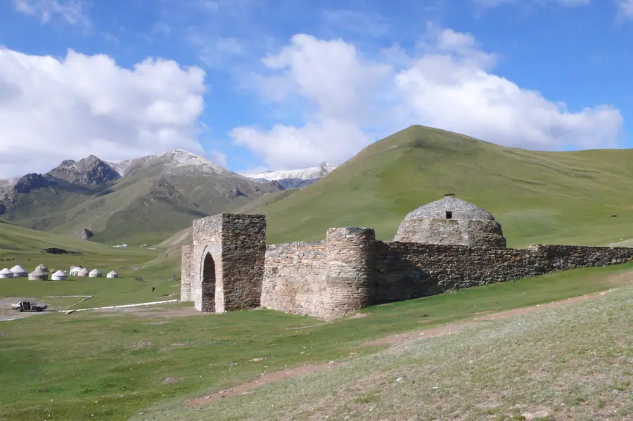
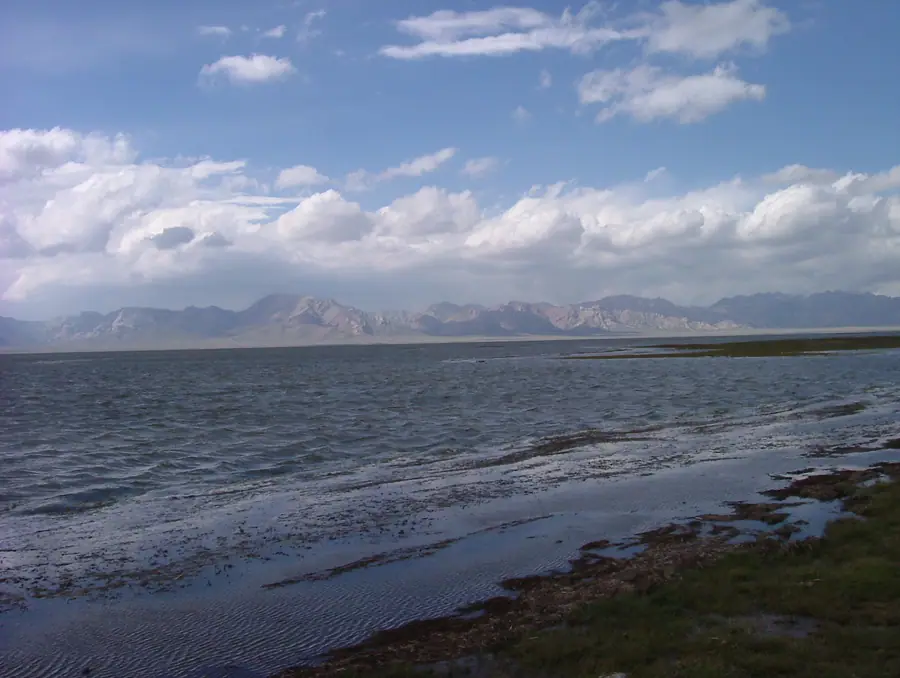
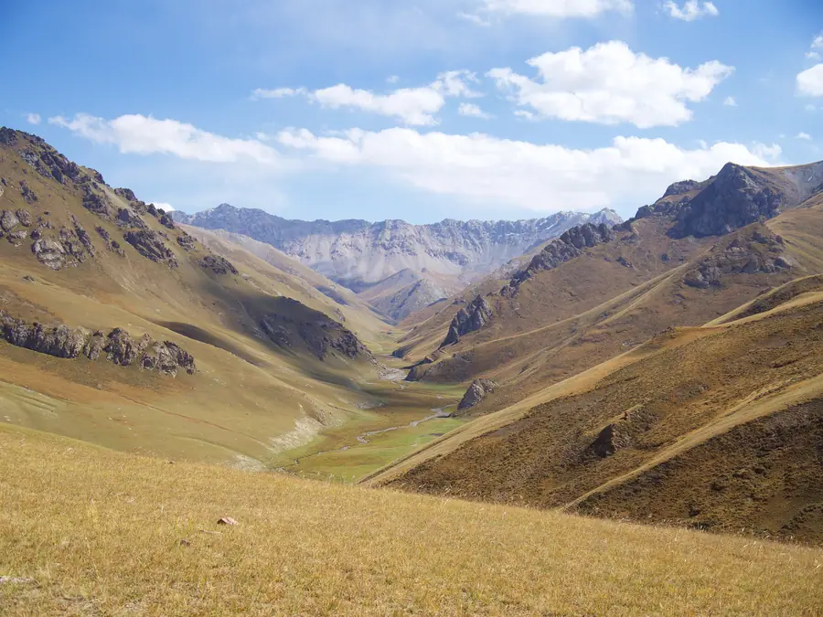
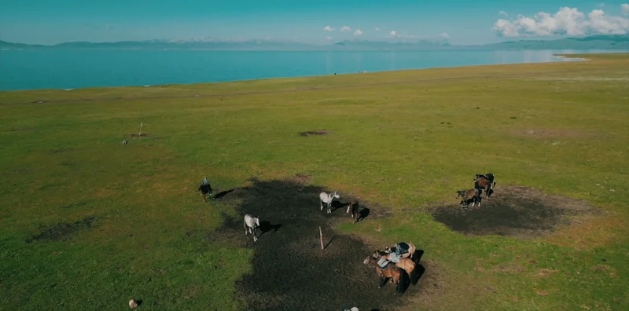
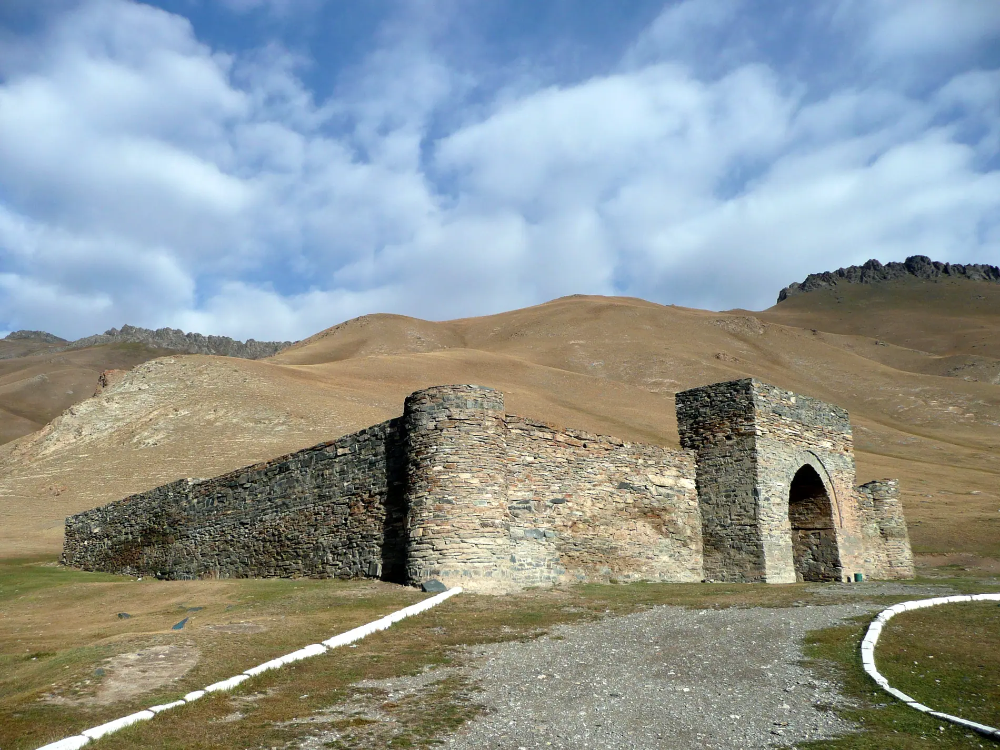

День 1
На юг, в глубь Тянь-Шаня
Выезжаем из Бишкека и поднимаемся в горы: перевалы, долины, первые табуны. Вечером — в Нарыне, где начинается настоящая глубинка.
- Горные перевалы
- Кочкор
- Нарын
НочёвкаНарын, гостиница
Шесть дней по следам Великого шёлкового пути: Таш-Рабат, Чатыр-Куль и ночи в юртах.
Средневековый караван-сарай Таш-Рабат, бескрайнее озеро Чатыр-Куль и вечера у Сон-Куля: путь кочевников и купцов на внедорожниках.

Каменный караван-сарай в долине, где когда-то останавливались купцы Великого шёлкового пути.

Огромное озеро на высоте более 3000 метров среди открытых степей. Участок в приграничной зоне.

Заключительные вечера в юртах у воды и табуны лошадей на закате.
Мы не привязываем день к минутам: в горах ритм задают погода и дорога. Зато точно знаем, где вы окажетесь и что увидите.
День 1
Выезжаем из Бишкека и поднимаемся в горы: перевалы, долины, первые табуны. Вечером — в Нарыне, где начинается настоящая глубинка.


День 2
Дорога вдоль реки Ат-Баши приводит к Таш-Рабату, средневековому караван-сараю среди холмов. Вечером можно пройтись по долине и услышать тишину, в которой когда-то отдыхали караваны.
День 3
Едем к Чатыр-Кулю: огромная водная гладь среди открытых хребтов. Здесь много неба и мало людей. Возвращаемся в Ат-Баши на ужин в гостевом доме.
Район находится в приграничной зоне: разрешения оформляются заранее.

День 4
Дорога на север и затем наверх, к Сон-Кулю. Вечером — юрты, ужин, степной ветер и закат над озером.

День 5
Полный день на высокогорных пастбищах: прогулка верхом, разговор с пастухами, чай у юрты. Это день для тишины и фотографий.
Верховая езда по желанию и по подготовке.

День 6
Прощаемся с озером и спускаемся к Бишкеку через перевал Калмак-Ашуу. По дороге — остановки для фото.
Важно честно понимать, что вас ждёт: дороги, высота, условия ночёвок и погода.
Переезды
Физическая нагрузка
Высота
Комфорт
Вам подойдёт, если
Лучше выбрать другое, если

Путь каравановДва внедорожника. На некоторых участках дорога грунтовая.
От 4 до 8 путешественников.
Гостиницы и гостевые дома, юрты в Таш-Рабате и на Сон-Куле.
Чатыр-Куль в приграничной зоне: разрешения оформляем заранее.
Точный состав услуг и стоимость мы согласуем отдельно: оставьте заявку, и мы вернёмся с программой и расчётом под вашу группу и даты.
Получить расчёт →Не нашли свой вопрос? Напишите нам, мы ответим и подскажем, подойдёт ли вам этот маршрут.
Задать вопрос →Это средневековый каменный караван-сарай в горной долине. Здесь легко представить, как отдыхали купцы на Великом шёлковом пути.
Для района Чатыр-Куля да: он находится в приграничной зоне, и разрешения оформляются заранее.
Стоимость зависит от состава группы, дат и выбранных услуг, поэтому мы не публикуем одну цифру «для всех». Оставьте заявку, и мы пришлём программу с расчётом.
Программа может меняться из-за погоды, состояния дорог и безопасности участников. В горах это нормально: мы заранее обсуждаем запасные варианты.
Да. Мы можем собрать группу под вас: друзья, семья или коллеги. Оставьте заявку и напишите в пожеланиях, сколько вас.

8 дней · 3 озера · 2 внедорожника

Алай, ледники и базовый лагерь

Леса, водопады и самое чистое озеро

Каньоны без толп и первые цветы
Золотой свет на высокогорных пастбищах

Снег, горячая вода и охотники с беркутом
Оставьте контакты — вернёмся с программой и расчётом под вашу группу и даты. Если пока сомневаетесь, тоже напишите: расскажем, подходит ли вам такой формат.
Что будет дальше
Мы свяжемся с вами, ответим на вопросы и пришлём программу с расчётом. Состав услуг и стоимость согласовываем отдельно.
Заявка
Оставьте контакты — вернёмся с программой и расчётом под вашу группу и даты.